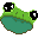

Introduction 
Welcome to the FRUG documentation! Here you will find guides and examples to help you get started using FRUG.
FRUG is intended to provide a similar abstraction layer over graphics programming as to how SDL and SFML do for C/C++, meaning that it should provide developers enough control and flexibility to implement their own architectures & design patterns, yet simplifying the process of working with graphics so developers won’t have to worry about implementing all the repetitive tasks related to getting things to the screen.
The purpose of the project is to provide a simple graphics library which allows learning directly on rust (which is why documentation and tutorials for FRUG are vital) and developing simple games with as few resources/libraries as possible.
Please note that the project is still in very early stages of development, I would only advice to use it if you want to learn how to make simple games with rust. This may change in the future, yet for the moment the implemented features are minimal and things may change drastically.
Currently FRUG allows the following features:
- Window creation
- Loading & rendering textures
- Scaling textures
- Handle Mouse input
- Handle Keyboard input
- Alpha blending for textures
And these are the features currently under development:
- Rotating textures
- Choosing a specific backend (Direct X, Metal, Vulkan, etc.)
- Writing and using custom shaders
- Handle window state events
- Drawing text easily
- Playing audio
- Configure audio
Using FRUG
As mentioned in the introduction, FRUG aims to be simple enough to learn, yet still allow as much control as possible to developers, therefore avoiding to make of FRUG an engine. Given this, FRUG identifies itself as a library which simplifies basic tasks related to getting things on the screen.
In this section you will find some guides to show you how FRUG works (don't expect these to be full tutorials, those will come later).
We'll start by taking a look at how one creates a window, then we'll set the background color of our window, followed by drawing a rectangle with a color and then with an image/sprite in it, after that we'll take a look at how we can create a custom shape by defining vertices and indices, and finally we'll take a look at how to work with our "camera".
In later chapters you can find examples of simple games to review all these concepts and see how they can be applied to your games.
Setup and creating a window
We can't do much related to getting things on the screen if we don't have somewhere to draw our stuff in the first place, so we'll need to create a window for that.
As with most rust projects, we'll need to start creating our new project with the following command:
cargo init my_frug_project
FRUG attempts to simplify the process of starting out, and that includes importing stuff. All we'll need for now is adding FRUG into our Cargo.toml:
# ...
[dependencies]
frug = "*"
# We'll use the star to use the latest version.
# If you want, you can substitute the star with the version number you want to use.
Now that frug is in our project we can start using it in our main. For this, add the import of frug into the top of your main.rs:
#![allow(unused)] fn main() { use frug; }
Now, inside our main function we'll need to add some things in order for the magic to happen, the first of these is the frug_instance which is the object that holds most of our functions and setup of our window, camera, textures, etc. The other one is the event_loop (we will not go into much detail for the moment about this, just keep in mind that it is where things will happen). Fortunately all we need to get these two things is call a function called new which returns both things. All we need to pass as a parameter is the name we want for our window. In the end it looks like this inside our main function.
#![allow(unused)] fn main() { let (frug_instance, event_loop) = frug::new("My Window"); }
Then, we'll need our update function, which we won't use for the moment but it is important because it is here where we will write the code we want to execute with each frame.
#![allow(unused)] fn main() { let update_function = move |_instance: &mut frug::FrugInstance, _input: &frug::InputHelper| { // your frame per frame code will go here! }; }
Lastly, all we need to do is start running our game. For this, the frug_instance has a method called run which receives the event loop we initialized earlier, and the code we want to execute each frame (the update function).
#![allow(unused)] fn main() { frug_instance.run(event_loop, update_function); }
In the end, your whole main.rs file should look like this:
use frug; fn main() { let (frug_instance, event_loop) = frug::new("My Window"); let update_function = move |_instance: &mut frug::FrugInstance, _input: &frug::InputHelper| { // your frame per frame code will go here! }; frug_instance.run(event_loop, update_function); }
And if you run it with cargo run it should give you a window that looks like this:

You might notice that a bunch of errors are showing up in our terminal. This happens because we're not asking WGPU (the graphics API behind FRUG) to do anything. We can ignore this for the moment as we'll start doing just that when we start drawing rectangles and shapes on our window. With time I'll fix that issue but for the moment you can be at peace knowing that those errors will dissapear in time.
Next stop... drawing rectangles!
Drawing a rectangle
Now that we have somewhere to draw things, why don't we start drawing something in there?
In computer graphics almost everything is drawn with triangles. However, in 2D games most of the times we use rectangles, so why don't we start by drawing one on our screen? Since it is so common, our FRUG instance includes a function that draws a rectangle given a position, the width, the height, and the color we want for our rectangle.
Now, even though it is easy to draw the rectangle, it is also important to clear things up. FRUG works by storing a list of all the shapes it should draw each frame, so it is important to avoid drawing the same shapes we used on previous frames (or maybe for some reason you want to do that), to do that we should add in our update function a call to our instance's clear function, that way we forget about the previous frames' shapes and we can start anew.
#![allow(unused)] fn main() { instance.clear(); }
Now we can start drawing a rectangle with the following line (after the one we just added):
#![allow(unused)] fn main() { instance.clear(); instance.add_colored_rect(0.0, 0.0, 0.75, 0.5, [0.0, 0.5, 0.5]); // <- NEW! }
Those first 4 numbers we're passing as parameters might look logical to you, but the other three, in case you missed it, defines the red, green, and blue parts of the color we'll be using in our rectangle.
If you run this you will notice that nothing shows up on the screen and that the weird list of wgpu errors are still happening. This is because FRUG is storing all that is needed to draw that rectangle in a staging buffer, meaning that we're actually never saying to FRUG to draw that rectangle. For that we need to add the following line to ask our instance to send the data in that staging buffer to the actual buffer which will be drawn onto the screen:
#![allow(unused)] fn main() { instance.clear(); instance.add_colored_rect(0.0, 0.0, 0.75, 0.5, [0.0, 0.5, 0.5]); instance.update_buffers(); // <- NEW! }
Now, if we run the project we should be able to see our rectangle nicely showing up in our screen.
In the end, your main.rs file should look like this:
use frug; fn main() { let (frug_instance, event_loop) = frug::new("My Window"); let update_function = move |instance: &mut frug::FrugInstance, _input: &frug::InputHelper| { instance.clear(); instance.add_colored_rect(0.0, 0.0, 0.75, 0.5, [0.0, 0.5, 0.5]); instance.update_buffers(); }; frug_instance.run(event_loop, update_function); }
Next up... changing the background color!
Background color
Now, maybe we don't want just a black background for our games, maybe we want some blue for a sky, or green if we're in some type of forest. We can do this easily in our game, all we need to do is create the color we want and tell our FRUG instance that we should use that color instead.
We can start by creating a variable to hold that color we want before definind our update function (or in other words, right at the beggining of our main function).
#![allow(unused)] fn main() { let (frug_instance, event_loop) = frug::new("My Window"); let background_color = frug::create_color(0.1, 0.2, 0.3, 1.0); // <- NEW! }
Now we just have to tell our frug_instance to use such color as the background color. Don't forget to make the frug_instance mutable so we can actually do that!
#![allow(unused)] fn main() { let (mut frug_instance, event_loop) = frug::new("My Window"); // make the instance mutable! let background_color = frug::create_color(0.1, 0.2, 0.3, 1.0); frug_instance.set_background_color(background_color); // <- NEW! }
If you run this you should see our background in a new and nice blue!

The final code for this section should look something like this:
use frug; fn main() { let (mut frug_instance, event_loop) = frug::new("My Window"); let background_color = frug::create_color(0.1, 0.2, 0.3, 1.0); frug_instance.set_background_color(background_color); let update_function = move |instance: &mut frug::FrugInstance, _input: &frug::InputHelper| { instance.clear(); instance.add_colored_rect(0.0, 0.0, 0.75, 0.5, [0.0, 0.5, 0.5]); instance.update_buffers(); }; frug_instance.run(event_loop, update_function); }
In the next section we'll start drawing images using textures!
Drawing a texture
Drawing rectangles is all fine and we could technically make games with just that (like Pong! as we'll see in the examples) but most games use images to represent our characters. To keep things simple in this guide we'll just draw an image on the screen, but we'll see how to make more interesting things with this in the (simple) platformer example.
As we won't need all the previous stuff we did let's first clean up our file so we are with a clean window with a dark background (if you want you can use another color though, you now know how!).
We should have something like this:
extern crate frug; fn main() { let (mut frug_instance, event_loop) = frug::new("My Window"); let update_function = move |instance: &mut frug::FrugInstance, _input: &frug::InputHelper| { instance.clear(); instance.update_buffers(); }; frug_instance.run(event_loop, update_function); }
Now, to draw things on the screen we first need to load those resources. FRUG receives the bytes of such images so they can be embedded in our game and we don't need to ship our game with a bunch of folders containing such images (yet you can do that if you want!). To do this we'll use rust's include_bytes function before defining our update function. I'll use an image of a frog I have but feel free to use any image you like.
#![allow(unused)] fn main() { let img_bytes = include_bytes!("frog.png"); }
Then we need to tell our FRUG instance to load those bytes.
#![allow(unused)] fn main() { let frog_text_idx = frug_instance.load_texture(img_bytes); }
FRUG helps us out a bit by returning the index of such texture so we can use it later. For the moment it might not make much sense but it will in a bit.
Now all we need to do is inside our update function after the instance.clear() tell our instance to draw a rectangle using the texture we just loaded. We use the following line:
#![allow(unused)] fn main() { instance.add_tex_rect(-0.25, 0.0, 0.5, 0.5, frog_text_idx); }
You might notice that such function looks very similar to the one we used to draw colored rectangles, the only difference is that instead of passing a color we pass the index of our texture, which we stored before while loading our texture.
If you run the project you should be able to see your image on the screen!
Your whole main.rs should look like this:
use frug; fn main() { let (mut frug_instance, event_loop) = frug::new("My Window"); let img_bytes = include_bytes!("frog.png"); let frog_text_idx = frug_instance.load_texture(img_bytes); let update_function = move |instance: &mut frug::FrugInstance, _input: &frug::InputHelper| { instance.clear(); instance.add_tex_rect(-0.25, 0.0, 0.5, 0.5, frog_text_idx); instance.update_buffers(); }; frug_instance.run(event_loop, update_function); }
Now let's see how we can work with the camera and user input, shall we?
Camera and user input
If you are familiar with how WGPU works you might know this, but in case you don't, we have been working with 3D! I've tried to simplify some functions to work with 2D but when it comes to the camera I thought it was better to leave some control for developers so they can work with 3D if they want. If you want to go in depth with how the camera works I suggest going through those chapters in Learn WGPU. However, in here I'll just leave it at telling you that our FRUG instance has a property called camera which is a struct. Such struct contains some properties but the ones you can use to get started are the eye (a 3D point that defines where the camera is located) and the target (another 3D point which defines where our camera is looking at).
In this section we'll take a look at how we can move our camera using the arrow keys, for this we'll use the second property that appears in the definition of our update function called input.
inputis actually WGPU's Input Helper. Check it out if you wish learn more about such functions.
For this let's start by checking if our right key is being held inside our update function and before all the rendering-related lines.
#![allow(unused)] fn main() { let update_function = move |instance: &mut frug::FrugInstance, input: &frug::InputHelper| { // Checking our input if input.key_held(frug::VirtualKeyCode::Right) { // 1. // 2. We'll write something to move our camera in here } // Rendering instance.clear(); instance.add_tex_rect(-0.25, 0.0, 0.5, 0.5, frog_text_idx); instance.update_buffers(); }; }
-
You surely noticed that we wrote something saying
VirtualKeyCode. FRUG has some components that help use work with theinputstruct, in this case we use that enum to check for the right key. Later on we'll do the same for the left key. -
In there we'll write the code to move our camera
Now, like I mentioned before, our camera struct has the eye and target properties, which we'll use to move our camera. Since we want to keep this as 2D as possible we will move both the eye and target properties of the camera in the same part and at the same rate. In this case we'll want to move things horizontally, so we'll use the x property of both of them with the following lines:
#![allow(unused)] fn main() { instance.camera.eye.x -= 0.01; instance.camera.target.x -= 0.01; }
If you run your project you'll notice that when you press the right key our image nicely moves to the right side of the screen. This means that the camera is moving, not the frog itself, yet it creates the illusion that the frog is moving.
Now lets do the same thing for the left, shall we?
#![allow(unused)] fn main() { else if input.key_held(frug::VirtualKeyCode::Left) { instance.camera.eye.x += 0.01; instance.camera.target.x += 0.01; } }
If you run this you'll notice that we now can move things to either side (horizontally), yet you'll probably notice that if you press both of them it moves towards the right side of the screen. This is because we did things in a poor manner. You could implement your own version of this to avoid this, or if you want you can check it out in the platformer example, where things will be a bit better, yet we'll leave it like that for the sake of simplicity in this example.
As always, here's the whole version of the code you should have up until now (don't forget that you should use your own image for the texture!).
use frug; fn main() { let (mut frug_instance, event_loop) = frug::new("My Window"); let img_bytes = include_bytes!("frog.png"); let frog_text_idx = frug_instance.load_texture(img_bytes); let update_function = move |instance: &mut frug::FrugInstance, input: &frug::InputHelper| { // Checking our input if input.key_held(frug::VirtualKeyCode::Right) { instance.camera.eye.x -= 0.01; instance.camera.target.x -= 0.01; } else if input.key_held(frug::VirtualKeyCode::Left) { instance.camera.eye.x += 0.01; instance.camera.target.x += 0.01; } // Rendering instance.clear(); instance.add_tex_rect(-0.25, 0.0, 0.5, 0.5, frog_text_idx); instance.update_buffers(); }; frug_instance.run(event_loop, update_function); }
Now let's check out how to draw custom shapes, shall we?
Creating a custom shape
Some times we want to use use other shapes different than rectangles. In this case FRUG gives us some flexibility and allows us to work at a bit lower level but still with simplicity. As you might already know, drawing things on the screen is mainly done via traingles, and our library is no exception.
Now, do you remember in the rectangle section that we mentioned that FRUG works by storing a list (actually a vec) of all the shapes we want to draw? Well, the FRUG instance has a function called add_colored_vertices which receives a set of vertices and indices to create a shape and add it to the staging buffer. For this we'll need to use another struct FRUG provides called Vertex which is composed of the position of the vertex, the color, and a texture index.
For the moment we'll ignore the texture index property of our vertex struct, but keep in mind that in the future we'll be able to do something similar to this but with images!
Let's start by cleaning up our main.rs so we have the bare minimum to create our window.
use frug; fn main() { let (mut frug_instance, event_loop) = frug::new("My Window"); let update_function = move |instance: &mut frug::FrugInstance, _input: &frug::InputHelper| { // Rendering instance.clear(); instance.update_buffers(); }; frug_instance.run(event_loop, update_function); }
Now that we have a clean slate we can start to define things one by one. Let's start with the color of our vertices, shall we? We want to create something a bit colorful, so let's create 3 colors before our update function (I'll keep it simple and make one pure red, another green, and another blue. But feel free to do it with your own colors!).
#![allow(unused)] fn main() { let red = [1.0, 0.0, 0.0]; let green = [0.0, 1.0, 0.0]; let blue = [0.0, 0.0, 1.0]; }
Now that we have our colors, lets define our vertices. For this we'll only give the position and the color, the rest we'll leave at default.
#![allow(unused)] fn main() { let vertices = [ frug::Vertex { // Vertex 0 position: [0.0, 0.5, 0.0], color: red, ..Default::default() }, frug::Vertex { // Vertex 1 position: [-0.5, -0.5, 0.0], color: green, ..Default::default() }, frug::Vertex { // Vertex 2 position: [0.5, -0.5, 0.0], color: blue, ..Default::default() }, ]; }
Then we need to define which indices we want to use. In this case we're drawing a triangle and we only need 3 indices, but you could be using a figure with more vertices (in such cases you should know that the indices represent which vertices form which triangles, this should be specified in counter clockwise order).
#![allow(unused)] fn main() { let indices = [0, 1, 2]; }
Lastly, all we need is to tell rust to draw our triangle using those vertices and indices. Let's add that line after our instance.clear().
#![allow(unused)] fn main() { instance.add_colored_vertices(&vertices, &indices); }
If you run your project you should see our multi-colored triangle.

The main.rs file should look like this:
use frug; fn main() { let (frug_instance, event_loop) = frug::new("My Window"); let red = [1.0, 0.0, 0.0]; let green = [0.0, 1.0, 0.0]; let blue = [0.0, 0.0, 1.0]; let vertices = [ frug::Vertex { // Vertex 0 position: [0.0, 0.5, 0.0], color: red, ..Default::default() }, frug::Vertex { // Vertex 1 position: [-0.5, -0.5, 0.0], color: green, ..Default::default() }, frug::Vertex { // Vertex 2 position: [0.5, -0.5, 0.0], color: blue, ..Default::default() }, ]; let indices = [0, 1, 2]; let update_function = move |instance: &mut frug::FrugInstance, _input: &frug::InputHelper| { // Rendering instance.clear(); instance.add_colored_vertices(&vertices, &indices); instance.update_buffers(); }; frug_instance.run(event_loop, update_function); }
As for version 0.1.0 (the first public version) these will be all the guides. However, I'll leave some examples to show how one could make a simple pong game and a platformer. Feel free to check those out or make your own!
Setting fullscreen and window size
Some times we don't want to have our games in a small window, maybe we want to have our game using the entirety of our screen. For this the FRUG instance has a function called set_fullscreen which receives a bool to indicate whether we want to set our window to fullscreen or not.
Therefore it would look like this:
#![allow(unused)] fn main() { // This sets our window to fullscreen frug_instance.set_fullscreen(true); // This makes us exit the fullscreen mode. frug_instance.set_fullscreen(false); }
Now, what if we don't want to use the whole screen but we want our window to have a specific size? For this our instance has a method called set_window_size which we can use to set both the width and height of our window, all we need to do is pass as paramters both numbers and consider it done!
#![allow(unused)] fn main() { frug_instance.set_window_size(550.0, 500.0); }
Examples
Now that we've cover the basics of how FRUG works, we can start checking out some examples to see how things can work together when making a game. We'll start by going through the "hello world" of games: Pong! and then we'll go through the basics of a platformer, meaning that we'll make just a character that can jump around, and collide with some objects.
Without further ado, let's a-go!
Pong
Pong is sometimes considered as the "Hello World" of games. A simple game which can let's us explore how things work. With FRUG this won't be the exception and we'll develop a simple version of Pong to explore how to use FRUG beyond simple feature examples.
The first thing we'll need is our main.rs with our frug instance initialization, our empty update function, and the run call. You should have something like this:
use frug; use cgmath::Vector2; fn main() { let (frug_instance, event_loop) = frug::new("Pong!"); let update_function = move |instance: &mut frug::FrugInstance, input: &frug::InputHelper| { // Rendering instance.clear(); instance.update_buffers(); }; frug_instance.run(event_loop, update_function); }
Oh, and don't forget to add FRUG to your Cargo.toml! (we'll also need another crate called cgmath so you might add it as well).
# ...
[dependencies]
cgmath = "0.18"
frug = "*"
Now, let's quickly go over what things we'll need, shall we?
- Our "player" (just a rectangle to represent the player's paddle/racket).
- The oponent (almost the same as the player).
- The ball
We could technically need more things, but for the sake of simplicity we'll only use those three things. Now, again for simplicity we'll just use rectangles for all 3 objects, yet the ball will obviously be smaller (a small square). This "ball" will start at the center of the screen and move to a random side of the screen to start the game. The "opponent" will just move to try to align the vertical center of the paddle with the center of the ball. And finally, we'll just let the player control their paddle through the keyboard's arrows.
Let's start by creating the ball and the opponent, as it allows us to start developing the simple aspects of our game right away.
We can start by creating a struct called "CollisionRectangle" which will help us to manage our 3 objects:
#![allow(unused)] fn main() { struct CollisionRectangle { pos: Vector2<f32>, width: f32, height: f32, vel: Vector2<f32>, } }
You might notice that we're using
Vector2<i32>for our position and velocity. This might look familiar if you've used Unity or other engines, but in case you don't know them just keep in mind that they will simply hold 2 components (x and y) for us to represent those attributes.
And we could also use a method to initialize new instances of our struct:
#![allow(unused)] fn main() { impl CollisionRectangle { fn new(x: f32, y: f32, width: f32, height: f32) -> CollisionRectangle { CollisionRectangle { pos: Vector2 { x, y }, width, height, vel: Vector2 { x: 0.0, y: 0.0 }, } } } }
Now that we have our struct, we can define our ball! (do this inside your main function but before your update function)
#![allow(unused)] fn main() { // ... // our objects let mut ball: CollisionRectangle = CollisionRectangle::new(-0.05, -0.05, 0.1, 0.1); }
Now all we need to do is render our ball! For this we will simply draw a rectangle using our FRUG instance, just like we did in the tutorial (this goes in our update function after the clear() function call).
#![allow(unused)] fn main() { instance.add_colored_rect( ball.pos.x, ball.pos.y, ball.width, ball.height, [1.0, 1.0, 1.0], ); }
If you run this now you'll notice that it will just show our screen and a weird rectangle. This happens because the coordinates of the "world" are from -1 to 1 on every direction, so if your window is not a square it is logical that the ball won't look like a square. We can easy-fix this by just making our window have the same height as it's width.
#![allow(unused)] fn main() { // This goes before our update function. frug_instance.set_window_size(800.0, 800.0); }
You might be thinking that this will be a severe issue when we want to work with a window that is not square-sized. Yes, you're right. This is always an issue and every engine and framework allows multiple types to solve this. In such cases it's better just to understand how the framework/engine/library works and use the solution that works best for you.
Now that we have a "ball" in our game, we need some way to make it start moving. For this we will just check if the player pressed the return key and if the ball isn't moving. If that's the case we will set the speed of the ball and a random direction (left or right).
We'll do this inside our update function:
#![allow(unused)] fn main() { let paddle_speed = 0.006; // start moving the ball if it's not moving if input.key_pressed(frug::VirtualKeyCode::Return) { if ball.vel.x == 0.0 { let dir = if rng.gen_bool(0.5) { -1.0 } else { 1.0 }; ball.vel.x = 0.01 * dir; } } }
And now we need to actually move the ball each frame. As this is something that we'll need to do for every object in our game lets add it in the implementation of our Collision Rectangle.
#![allow(unused)] fn main() { fn update_pos(&mut self) { self.pos += self.vel; } }
And we'll call that method inside our update function:
#![allow(unused)] fn main() { // updates ball.update_pos(); }
If you run this and hit the return key you'll notice that the ball starts moving!
Now we'll need something our ball can actually bounce with, so why don't we start working with the player's paddle?
For this, just as we did with the ball, we'll need to create another instance of our CollisionRectangle. You can add this next to the init of our ball.
#![allow(unused)] fn main() { let mut player = CollisionRectangle::new(-0.9, 0.2, 0.1, 0.5); }
And draw a rectangle each frame in the same way we did with our ball.
#![allow(unused)] fn main() { instance.add_colored_rect( player.pos.x, player.pos.y, player.width, player.height, [1.0, 1.0, 1.0], ); }
And we can add a call to it's update_pos.
#![allow(unused)] fn main() { // updates ball.update_pos(); player.update_pos(); // <- NEW! }
Now, the movement for our "player" will be based on input, so let's just add a variable called paddle_speed, which we will use both with our player and the opponent. We'll keep things simple and add that to the player's vertical velocity if they upwards key is being pressed, and substract it with the downwards key (oh, and set the player's Y velocity to 0 each frame). This way if the player is pressing both keys at the same time the paddle will stop.
#![allow(unused)] fn main() { let paddle_speed = 0.006; // move player player.vel.y = 0.0; if input.key_held(frug::VirtualKeyCode::Up) { player.vel.y += paddle_speed; } if input.key_held(frug::VirtualKeyCode::Down) { player.vel.y -= paddle_speed; } }
If you try this out you should see that the paddle can move when you press the keys! However, you'll also notice that the ball can absolutely ignore our paddle and go through it and into the infinity. Let's fix that.
We can start with the simple things and reset the ball if it goes outside the screen. For this we will need a function to check if the ball has gone outside the screen. This is not a good practice but for the sake of simplicity let's just add it in our CollisionRectangle implementation (or feel free to do it in a better way!).
#![allow(unused)] fn main() { fn is_game_over(&mut self) -> bool { if self.pos.x - self.width * 2.0 >= 1.0 || self.pos.x + self.width * 2.0 < -1.0 { return true; } return false; } }
And we'll check for this at some point in our update function.
#![allow(unused)] fn main() { // check if it's game over if ball.is_game_over() { // restart ball ball.pos.x = -0.05; ball.pos.y = -0.05; ball.vel.x = 0.0; ball.vel.y = 0.0; } }
With that done we need to make the ball bounce with our paddle and with the vertical limits of the screen. This time we'll go through the more elaborate part of it, colliding with the paddle. I won't go into much detail with this function, just know that we'll do it in the implementation of the CollisionRectangle and we'll do it in some way to receive another object as parameter and bounce against it in the x axis and set a new vertical direction randomly.
#![allow(unused)] fn main() { /// This function will only work for the ball! fn check_collision(&mut self, obj: &CollisionRectangle) { let mut rng = rand::thread_rng(); let tolerance_w = 0.15 * self.width; // percentage of shape let tolerance_h = 0.15 * self.height; // percentage of shape // Horizontal collision if self.pos.y - tolerance_h > obj.pos.y - obj.height { if self.pos.y - tolerance_h < obj.pos.y { // give priority for horizontal collision if self.pos.x < obj.pos.x + obj.width { if self.pos.x > obj.pos.x { // Left collision is happening self.vel.x *= -1.0; self.vel.y = rng.gen_range(-0.01..0.01); return; } } if self.pos.x + self.width > obj.pos.x { if self.pos.x + self.width < obj.pos.x + obj.width { // Right collision is happening self.vel.x *= -1.0; self.vel.y = rng.gen_range(-0.01..0.01); return; } } } } // Vertical collision if self.pos.x + tolerance_w < obj.pos.x - obj.width { if self.pos.x + tolerance_w > obj.pos.x { // give priority for vertical collision if self.pos.y > obj.pos.y - obj.height { if self.pos.y < obj.pos.y { // Up collision is happening self.vel.y *= -1.0; return; } } if self.pos.y - self.height < obj.pos.y { if self.pos.y - self.height > obj.pos.y - obj.height { // Down collision is happening self.vel.y *= -1.0; return; } } } } // No collision was detected } }
And for the ball to bounce with the floor and ceiling we'll do something similar to what we did to reset the ball.
#![allow(unused)] fn main() { fn check_collision_screen(&mut self) { if self.pos.y >= 1.0 { if self.vel.y > 0.0 { self.vel.y *= -1.0; } } else if self.pos.y - self.height < -1.0 { if self.vel.y < 0.0 { self.vel.y *= -1.0; } } } }
Now we need to add those calls inside our update function.
#![allow(unused)] fn main() { // bounce ball in case of collision ball.check_collision(&player); ball.check_collision_screen(); }
And with that done we should have a ball that neatly bounces with our player's paddle!
You might notice that there's a very rare situation where the ball gets trapped between the floor/ceiling and the paddle. For the sake of simplicity of this example I'm not fixing that issue but feel free to try your own solution!
Now all we have left to do is to create our opponent. Fortunately, it is really easy now that we've done the hard parts. We can start by adding a new instance of the CollisionRectangle for our opponent.
#![allow(unused)] fn main() { let mut opponent = CollisionRectangle::new(0.8, 0.2, 0.1, 0.5); }
Add it's checks for collisions with our ball.
#![allow(unused)] fn main() { ball.check_collision(&opponent); }
Then the call to update_pos.
#![allow(unused)] fn main() { opponent.update_pos(); }
And our drawing of the opponent's rectangle.
#![allow(unused)] fn main() { instance.add_colored_rect( opponent.pos.x, opponent.pos.y, opponent.width, opponent.height, [1.0, 1.0, 1.0], ); }
Finally, we need some sort of AI to move our paddle. In this case we'll keep things simple and just try to align the center of the opponent with the center of the ball.
#![allow(unused)] fn main() { // move opponent let opponent_y = opponent.pos.y - (opponent.height / 2.0); let ball_y = ball.pos.y - (ball.height / 2.0); if opponent_y > ball_y { opponent.vel.y = -paddle_speed; } else if opponent_y < ball_y { opponent.vel.y = paddle_speed; } }
And... done! If you've gone through these steps you should be able to play pong!

Now that we've gone through a simple game, why don't we try something that involves sprites and a bit more color?
Simple platformer
While there are some games out there that use only simple shapes, most games use images and textures to represent a more elaborate character than a triangle. So in this example we'll go through how FRUG can help us make games that have images and animations. What we'll do will look a bit like the following:

As you can see, there are no enemies or complex mechanics, but the basics are all there: we have animations of our frog, a background, and collisions. Some things might not be as polished as one might like but the idea is there and I thought it would be better to keep things as simple as possible.
We'll start with our basic FRUG setup we've used in previous examples in our main.rs:
use frug; fn main() { let (frug_instance, event_loop) = frug::new("My Simple Platformer"); let update_function = move |instance: &mut frug::FrugInstance, _input: &frug::InputHelper| { }; frug_instance.run(event_loop, update_function); }
Let's work our way up from the simple things to the complex ones, shall we? In such a case we'll start with drawing the background. For this we'll first need to load our texture, just as we did in previous examples:
You can find all the assets for this project in the example folder of the FRUG repo in this link.
#![allow(unused)] fn main() { // background let img_bytes = include_bytes!("platformer_imgs/Purple.png"); let background_tex_idx = frug_instance.load_texture(img_bytes); }
I'm using the purple tiles you saw in the .gif above. However, the image is only 1/6th of what you saw. To achieve the background you saw we need to repeat the image a couple of times, for this we'll have the following function.
#![allow(unused)] fn main() { /// This function helps us draw the same texture for our background on repeat. fn draw_repeat_background(instance: &mut frug::FrugInstance, tex_idx: usize, rows: u16, cols: u16) { let tile_w: f32 = 2.0 / cols as f32; let tile_h: f32 = 2.0 / rows as f32; for i in 0..rows { for j in 0..cols { instance.add_tex_rect( tile_w * j as f32 - 1.0, tile_h * -(i as f32) + 1.0, tile_w, tile_h, tex_idx, false, false, ); } } } }
As you can see, our function receives a FrugInstance which we'll use to draw the texture rectangles for our mosaic background, we'll also receive the texture index of the image to draw, and how many columns and rows we want tod draw. With that all we need to do is calculate the length and height of each tile and draw them in their respective positions.
Remember that FRUG uses a -1 to 1 coordinate system, which means the size of each size of the screen is 2. Yet these are world coordinates, and that means that if you use a non-squared screen you'll need to do some math to get proper proportions for your assets.
In this example we'll set our window to a squared size to avoid doing weird math to avoid weird stretched images.
#![allow(unused)] fn main() { frug_instance.set_window_size(800.0, 800.0); }
Now all we have to do is call our function in our render section of our main:
#![allow(unused)] fn main() { // REMEMBER: THIS GOES AFTER THE instance.clear() // background draw_repeat_background(instance, background_tex_idx, 6, 6); }
Now we should have our background being rendered nicely!
Next up, let's try drawing our floor tiles. For this we'll start by defining where this tiles will be in our "world". In future iterations we might need to change where things are to test different things, and to achieve this we'll create a matrix to "define" where things spawn in our world.
#![allow(unused)] fn main() { let world_matrix = [ [0, 0, 0, 0, 0, 0, 0, 0, 0, 0], [0, 0, 0, 0, 0, 0, 0, 0, 0, 0], [0, 0, 0, 0, 0, 0, 0, 0, 0, 0], [0, 0, 0, 0, 0, 0, 0, 0, 0, 0], [0, 0, 0, 0, 0, 0, 0, 0, 0, 0], [0, 0, 0, 0, 0, 0, 0, 0, 0, 0], [0, 0, 0, 0, 0, 0, 0, 0, 0, 0], [0, 1, 1, 1, 1, 1, 1, 1, 1, 0], [0, 0, 0, 0, 0, 0, 0, 0, 0, 0], [0, 0, 0, 0, 0, 0, 0, 0, 0, 0], ]; }
As you can see, we have a 10x10 matrix of 0s and 1s. In here 0s mean nothing, but the 1s will represent these floor tiles.
Now we'll need to define our struct to represent our game objects.
#![allow(unused)] fn main() { #[derive(Clone)] struct Entity { _name: Option<String>, tex_idx: Option<usize>, sprite: Option<Sprite>, pos: Option<Vector2<f32>>, vel: Option<Vector2<f32>>, size: Option<Vector2<f32>>, collisions: bool, gravity: bool, controlling: bool, flip_img_x: bool, flip_img_y: bool, } }
You'll notice that there are a lot of attributes in that struct that we don't really need for the floor tiles. However, you'll see later on that they will come in handy, yet some of this can be a bit obvious what they do.
If you're using some code editor that checks how things are going you'll find out that there is a data type that doesn't exist, something called Sprite. We'll also need to define this struct, which will be used with our player to handle our animations.
#![allow(unused)] fn main() { #[derive(Clone)] struct Sprite { tex_idxs: Vec<usize>, anim_speed: u8, frame_timer: u8, current_idx: usize, } }
Now, we'll need to to create some methods for our Entity, the first of these is the default implementation. This is just to ease our future a bit when we create new instances of our entity object.
#![allow(unused)] fn main() { impl Default for Entity { fn default() -> Self { Entity { _name: None, tex_idx: None, sprite: None, pos: None, vel: None, size: None, collisions: false, gravity: false, controlling: false, flip_img_x: false, flip_img_y: false, } } } }
And we'll also need the render method of our entities.
#![allow(unused)] fn main() { impl Entity { fn render(&self, frug_instance: &mut FrugInstance) { match self.tex_idx { Some(idx) => frug_instance.add_tex_rect( self.pos.unwrap().x, self.pos.unwrap().y, self.size.unwrap().x, self.size.unwrap().y, idx, self.flip_img_x, self.flip_img_y, ), None => {} } } } }
With this, we won't have to worry about how we draw every type of game object. We just have to create entities and give them the proper texture index.
Yet for this to work properly we need to create a Vec of entities to hold all our entities and make it easy to call all methods for all our entities (this goes before our update function in our main).
#![allow(unused)] fn main() { let mut entities: Vec<Entity> = Vec::new(); }
Before we can create those instances we should load the texture for our floor tiles (just after we loaded the background texture).
#![allow(unused)] fn main() { // floor tiles let img_bytes = include_bytes!("platformer_imgs/land.png"); let land_tex_idx = frug_instance.load_texture(img_bytes); }
And now we actually need to create those entities. We'll go through our world_matrix and create a floor tile when we encounter a 1.
#![allow(unused)] fn main() { // load entities according to world matrix for i in 0..world_matrix.len() { for j in 0..world_matrix[0].len() { match world_matrix[i][j] { 1 => { // floor tiles let land_size = 2.0 / world_matrix.len() as f32; let land_pos_x = j as f32 * land_size - 1.0; let land_pos_y = i as f32 * -land_size + 1.0; let new_land = Entity { tex_idx: Some(land_tex_idx), pos: Some(Vector2 { x: land_pos_x, y: land_pos_y, }), size: Some(Vector2 { x: land_size, y: land_size, }), collisions: true, ..Default::default() }; entities.push(new_land); } _ => {} } } } }
As you can see that bit of code is somewhat longer than other blocks of code, but I hope it is easy enought to understand. All we do is if we find a 1 in the world matrix we calculate where our floor tiles should be and create an entity instance with such values and the proper texture index.
No we just have to call our render method in our rendering section of our main function (after we draw our background).
#![allow(unused)] fn main() { // entities for entity in &entities { entity.render(instance); } }
If you run this, you should be able to see your tiles neatly rendering in that world! And the better part of this is that you can modify the world matrix and you'll have to change nothing more for the changes to appear in your game!
Now, the last part, and the longest one is our player. This will involve some changes but hopefully it will be easy enough with what we've done so far.
We can start with loading the textures for our player, in this case, a frog (but feel free to use whatever you want). For this we'll store them in a vec! instead. This is because we'll have multiple images for our animation of our frog.
#![allow(unused)] fn main() { // frog let frog_tex_idxs = vec![ frug_instance.load_texture(include_bytes!("platformer_imgs/frog/0.png")), frug_instance.load_texture(include_bytes!("platformer_imgs/frog/1.png")), frug_instance.load_texture(include_bytes!("platformer_imgs/frog/2.png")), frug_instance.load_texture(include_bytes!("platformer_imgs/frog/3.png")), frug_instance.load_texture(include_bytes!("platformer_imgs/frog/Fall.png")), frug_instance.load_texture(include_bytes!("platformer_imgs/frog/Jump.png")), ]; }
As you can see we have 4 images (which will be for our walking animation), 1 for our jump, and 1 for when the player is falling.
For the sake of keeping this tutorial short I'll go a bit quicker with the next steps. For these next sections I'll just make a summary of what is happening, but I'll try to make the code as understandable as possible.
Before starting with that we'll create some constants (this will go at the beggining of our file just after our imports).
#![allow(unused)] fn main() { // ======= CONSTANTS & ENUMS ====== const GRAVITY: f32 = 0.001; const PLAYER_SPEED: f32 = 0.01; const PLAYER_JUMP: f32 = 0.02; enum Collision { Top, Bottom, Left, Right, None, } // ======= CONSTANTS & ENUMS ====== }
We'll need to add some methods to our Entity:
#![allow(unused)] fn main() { impl Entity { fn process_input(&mut self, input: &frug::InputHelper) { if self.controlling { match self.vel.as_mut() { Some(vel) => { vel.x = 0.0; if input.key_held(frug::VirtualKeyCode::Left) { vel.x -= PLAYER_SPEED; } if input.key_held(frug::VirtualKeyCode::Right) { vel.x += PLAYER_SPEED; } if input.key_pressed(frug::VirtualKeyCode::Space) { if vel.y == 0.0 { vel.y += PLAYER_JUMP; } } } None => {} } } } fn update(&mut self, all_entities: &[Entity], current_idx: usize) { // gravity if self.gravity { self.vel.as_mut().unwrap().y -= GRAVITY; } // collisions if self.collisions { for i in 0..all_entities.len() { if i != current_idx { // only collide if other object has collisions as well if all_entities[i].collisions { match self.check_collision(&all_entities[i]) { Collision::Top => match self.vel.as_mut() { Some(v) => { if v.y > 0.0 { v.y = 0.0; } } None => {} }, Collision::Bottom => match self.vel.as_mut() { Some(v) => { //println!("{}", v.y); if v.y < 0.0 { v.y = 0.0; } } None => {} }, Collision::Left => match self.vel.as_mut() { Some(v) => { if v.x < 0.0 { v.x = 0.0; } } None => {} }, Collision::Right => match self.vel.as_mut() { Some(v) => { if v.x > 0.0 { v.x = 0.0; } } None => {} }, Collision::None => {} } } } } } // movement match self.vel { Some(v) => { let pos = self.pos.unwrap(); self.pos = Some(pos + v); } None => {} } // animate self.animate(); } fn render(&self, frug_instance: &mut FrugInstance) { match self.tex_idx { Some(idx) => frug_instance.add_tex_rect( self.pos.unwrap().x, self.pos.unwrap().y, self.size.unwrap().x, self.size.unwrap().y, idx, self.flip_img_x, self.flip_img_y, ), None => {} } } // choose the correct texture index accordingly fn animate(&mut self) { // animate only if object has sprites match self.sprite.as_mut() { Some(sprite) => { match &self._name { // Define how the animations work for each name Some(name) => match name.as_str() { "Player" => { match &self.vel { Some(vel) => { // flip img if necessary if vel.x > 0.0 { self.flip_img_x = false; } else if vel.x < 0.0 { self.flip_img_x = true; } // jump/fall (has priority) if vel.y > 0.0 { sprite.current_idx = 5; } else if vel.y < 0.0 { sprite.current_idx = 4; } // walk else if vel.x != 0.0 { // update timer if sprite.frame_timer == 0 { // timer ended sprite.frame_timer = sprite.anim_speed; sprite.current_idx += 1; if sprite.current_idx > 3 { // animation must go back to beggining sprite.current_idx = 0; } } sprite.frame_timer -= 1; } // idle else { sprite.frame_timer = 0; sprite.current_idx = 0; } } None => {} } // update texture index self.tex_idx = Some(sprite.tex_idxs[sprite.current_idx]); } _ => {} }, None => {} } } None => {} } } // checks collision with another entity fn check_collision(&self, other: &Entity) -> Collision { let collision_room = self.size.unwrap() / (2.0 * 3.0) / 2.0; // self collision borders let s_horizontal = ( self.get_center().x - collision_room.x, // left self.get_center().x + collision_room.x, // right ); let s_vertical = ( self.get_center().y + collision_room.y, // top self.get_center().y - collision_room.y, // bottom ); // other collision borders let o_horizontal = ( other.pos.unwrap().x, // left other.pos.unwrap().x + other.size.unwrap().x, // right ); let o_vertical = ( other.pos.unwrap().y, // top other.pos.unwrap().y - other.size.unwrap().y, // bottom ); // check for vertical collisions if (s_horizontal.0 > o_horizontal.0 && s_horizontal.0 < o_horizontal.1) || (s_horizontal.1 > o_horizontal.0 && s_horizontal.1 < o_horizontal.1) { // self is within the horizontal range of other // check for top collision if self.pos.unwrap().y >= o_vertical.1 && self.pos.unwrap().y <= o_vertical.0 { return Collision::Top; } // check for bottom collision else if self.pos.unwrap().y - self.size.unwrap().y <= o_vertical.0 && self.pos.unwrap().y - self.size.unwrap().y >= o_vertical.1 { return Collision::Bottom; } } // check for horizontal collisions if (s_vertical.0 < o_vertical.0 && s_vertical.0 > o_vertical.1) || (s_vertical.1 < o_vertical.0 && s_vertical.1 > o_vertical.1) { // self is within the vertical range of other // check for left collision if self.pos.unwrap().x < o_horizontal.1 && self.pos.unwrap().x > o_horizontal.0 { return Collision::Left; } // check for right collision if self.pos.unwrap().x + self.size.unwrap().x > o_horizontal.0 && self.pos.unwrap().x + self.size.unwrap().x < o_horizontal.1 { return Collision::Right; } } return Collision::None; } fn get_center(&self) -> Vector2<f32> { return Vector2 { x: self.pos.unwrap().x + self.size.unwrap().x / 2.0, y: self.pos.unwrap().y - self.size.unwrap().y / 2.0, }; } } }
-
the
process_inputreceives the frug::InputHelper and acts if the entity has enabled thecontrollingfield and add to the player's velocity (x) the player speed constant we just defined when the left/right arrows are being held, and when the space bar is being pressed we add to the player's velocity (y) the jump constant we created (only if the such velocity was 0, which will help us avoid an infinite jump bug). -
the
updatehandles adding gravity to the velocity if such attribute is enabled for the entity, then handle collisions (this part is way too long to explain but it is a generic collision detection algorithm which allows to detect the direction where objects are colliding. This part also receives theall_entitiesparameter to compare against all entities). If collisions are happening, we modify the velocity of the entity to simulate real collisions. This part could be improved but for the sake of simplicity let's leave it at the least needed for it to work. We then update the entity's position based on the velocity. Finally we call the animate function. -
the
animatefunction handles the selection of the correct texture index based on the object's name (this helps to define if it's the player or another type of entity), and the entity's velocity. Again, this could be better but this was a simple solution that works. -
the
check_collisionchecks whether the entity is colliding against another entity and if so, return the direction it is colliding from. -
the
get_centeris a helper function that returns a vector2 indicating the center position of an entity.
After this modifications to our entity struct, we actually need to spawn our player. We'll use the number 2 to indicate that in the world matrix.
#![allow(unused)] fn main() { let world_matrix = [ [0, 0, 0, 0, 0, 0, 0, 0, 0, 0], [0, 0, 0, 0, 0, 0, 0, 0, 0, 0], [0, 0, 0, 0, 0, 0, 0, 0, 0, 0], [0, 0, 0, 0, 0, 0, 0, 0, 0, 0], [0, 0, 0, 0, 0, 0, 0, 0, 0, 0], [0, 0, 2, 0, 0, 0, 0, 0, 0, 0], [0, 0, 0, 0, 0, 0, 0, 0, 0, 0], [0, 1, 1, 1, 1, 1, 1, 1, 1, 0], [0, 0, 0, 0, 0, 0, 0, 0, 0, 0], [0, 0, 0, 0, 0, 0, 0, 0, 0, 0], ]; }
And we'll need to add that case in our entities loading.
#![allow(unused)] fn main() { 2 => { // player let size = 2.0 / world_matrix.len() as f32; let pos_x = j as f32 * size - 1.0; let pos_y = i as f32 * -size + 1.0; let new_player = Entity { _name: Some("Player".to_string()), tex_idx: None, sprite: Some(Sprite { tex_idxs: frog_tex_idxs.clone(), anim_speed: 8, frame_timer: 8, current_idx: 0, }), pos: Some(Vector2 { x: pos_x, y: pos_y }), size: Some(Vector2 { x: size, y: size }), vel: Some(Vector2 { x: 0.0, y: 0.0 }), collisions: true, gravity: true, controlling: true, ..Default::default() }; entities.push(new_player); } }
As you can see, in this instance we're using the other attributes defined in our Entity struct. Thank you for your patience!
And lastly, we need to add some calls in our update function to actually process the input and call the update method of our entities.
#![allow(unused)] fn main() { // process input for entity in entities.iter_mut() { entity.process_input(input) } // update for i in 0..entities.len() { let mut current_entity = entities[i].clone(); current_entity.update(&entities, i); entities[i] = current_entity; } }
And that's it! You should have your game ready to run!
In case something didn't work properly, feel free to review the full code in the example (here's the link).
Contributing to the project
I hope you liked where things are going, and if you are in the spirit of helping to improve this project feedback would be truly appreciated. You can answer the following survey (this link) where you can leave some comments and help me evaluate some aspects of the project so it can be improved.